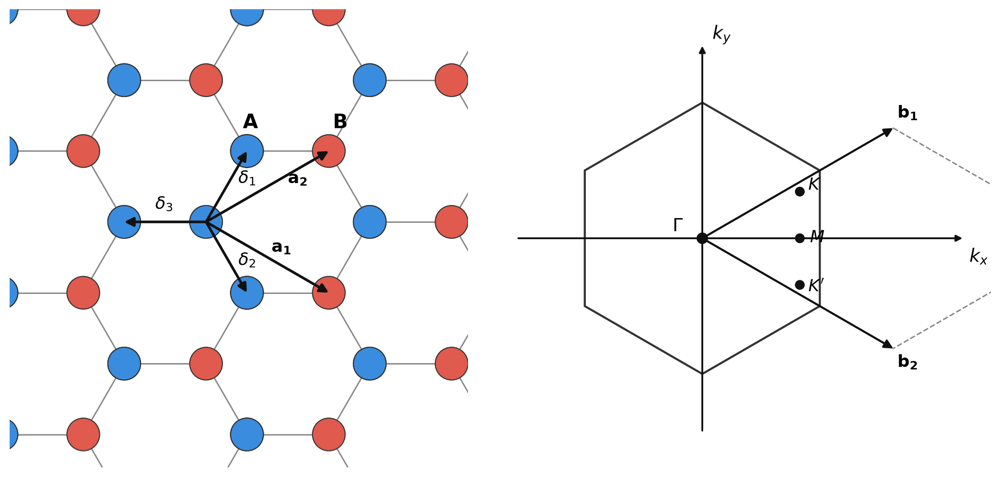

Introduction

Given the above coordinate choice for graphene unit cell, the band structure of a (N,0) CNT, obtained from the tight-binding model of graphene (Castro Neto et al. 2009), is expressed as:
\[\begin{equation} E = \pm t_0 \sqrt{f(k_x, m)} = \pm t_0 \sqrt{1+4\cos\bigg{(}\frac{3k_xa}{2}\bigg{)}\cos\bigg{(}\frac{\pi m}{N}\bigg{)}+4\cos^2\bigg{(}\frac{\pi m}{N}\bigg{)} } \end{equation}\]
where \(t_0 = 2.5eV\) is the tight-binding coupling constant and m is an index that runs from \(0\) to \(N-1\).
Analytical expression for band-gap
CNT is one of those nice systems where the band-gap can be expressed analytically. In (1), consider the bands with a \(+\) sign. Then the band-minimum, \(E_{min_m}\) for a given band index, \(m\), occurs when \[\begin{equation} \partial_{k_x}f(k_x, m)=0 \implies \frac{3k_xa}{2} \in \{0,\pi\} \end{equation}\]
while the minimum of the set \(E_{min_m}\) across all bands, as \(m\) is varied is obtained when the quadratic equation in \(\cos(\frac{\pi m}{N})\) is minimized: \[\begin{equation} \begin{split} \partial_{\cos(\pi m/N)}f(k_x, m)\bigg|_{\frac{3k_xa}{2} \in \{0,\pi\}} &= 0 \\ \implies \cos\bigg(\frac{\pi m}{N}\bigg) &= -\frac{1}{2}\cos\bigg(\frac{3k_xa}{2}\bigg)\bigg|_{\frac{3k_xa}{2} \in \{0,\pi\}} \\ &= \pm \frac{1}{2} \end{split} \end{equation}\] which means \(\cos\bigg(\frac{\pi m}{N}\bigg)\) needs to be as close to \(\pm\frac{1}{2}\) as possible. This is exactly possible whenever \(N = 3m\), then band-gap is exactly 0 and we call such a CNT metallic. Though in this article, we will consider only CNTs with a bandgap so let us restrict ourselves to when \(N=3m-1\), i.e \(N=8, 11, 14, 17\) etc.
Given a value of \(N\), \(m\) will take values in the set \(\{0, 1, 2, \ldots, N-1\}\). Let \[m_0 := \operatorname*{arg\,min}_{m} \left| m - \frac{N}{3} \right|.\] The band-minima is then written as (pairing the value of \(m_0\) with \(\frac{3k_x a}{2} = \pi\)): \[\begin{equation} E_g = 2t_0\sqrt{1-4\cos\bigg{(}\frac{\pi m_0}{N}\bigg{)}+4\cos^2\bigg{(}\frac{\pi m_0}{N}\bigg{)} } . \end{equation}\]
Analytial expression for Density of States
Good point to obtain an expression for the density of states near the band-minimum. First, we need to show the following approximation holds near the band-minimum:
\[\begin{equation} \frac{d}{dE} \bigg{(}\frac{3k_x a}{2}\bigg{)} \approx \frac{|E|}{t_0\sqrt{E^2-(E_g/2)^2}} \end{equation}\]
What do we mean by DoS? We mean Density of States at energy E per unit length, so that it is an intensive quantity. The DoS can be written for the case of 1D CNT as: \[\begin{equation} D(E) = \frac{1}{L}\frac{ \text{\# States in [k, k+dk]}}{dk(E)} \end{equation}\] We already know dk(E) from above
k-states are spaced uniformly with space \(d \bigg{(}\frac{3k_x a}{2}\bigg{)} = \frac{3\pi a}{L}\)
Now we compute D(E) in steps. First we find the numerator ie # states in [k, k+dk]: \[\begin{equation} \frac{1}{ \frac{3\pi a}{L}}\frac{d}{dE} \bigg{(}\frac{3k_x a}{2}dE \bigg{)} \approx \frac{1}{ \frac{3\pi a}{L}}\frac{|E|dE}{t_0\sqrt{E^2-(E_g/2)^2}} \end{equation}\] Dividing by L gives: \[\begin{equation} D(E) \approx \frac{1}{3\pi a}\frac{|E|}{t_0\sqrt{E^2-(E_g/2)^2}} \end{equation}\] But this equation is not correct since there is a degeneracy of 8: Degeneracy of 2 because of spins, degeneracy of 2 because there are two bands and each band has further even symmetry, so two branches to each band. Hence the DOS is actually given as: \[\begin{equation} D(E) \approx \frac{8}{3\pi a}\frac{|E|}{t_0\sqrt{E^2-(E_g/2)^2}} \end{equation}\]
(Need to prove there are two bands and that the only the lowest band comes into picture. This can be verified with the second level of approximation itself)
Surface Charge Density
Each state has its charge distributed uniformly across the cylinder. So that the surface charge density is given as (remember DoS is already per unit length, so that’s automatically taken care of while computing surface charge density) \[\begin{equation} \sigma = \frac{q}{2\pi R}\int_{E_1}^{E_2} D(E)f(E)dE \end{equation}\]
\[\begin{equation} \sigma = \int_{E_1}^{E_2} \frac{8q}{6\pi^2 R a}\frac{|E|}{t_0\sqrt{E^2-(E_g/2)^2}}f(E)dE \end{equation}\] From geometry, we know the relation: \[\begin{equation} 2R\sin\frac{\pi}{N} = \sqrt{3}a \end{equation}\] For big enough N, we can linearize sin function and this gives: \[\begin{equation} \sigma = \int_{E_1}^{E_2} \frac{8q}{3\sqrt{3}\pi a^2 N}\frac{|E|}{t_0\sqrt{E^2-(E_g/2)^2}}f(E)dE \end{equation}\] This agrees with the expression we have in (Leonard and Stewart 2006) subject to the above mentioned constraints.
Let us find the charge before (\(\rho_i\)) and after (\(\rho_f\)) thermal equilibrium is attained. Assume \(D(E)\) is the density of states at energy E, \(f(E, E_f)\) is the Fermi-Dirac distribution occupancy factor at energy E given fermi level energy at \(E_f\) and after equilibrium has been attained, the CNT sits at an electrostatic potential of \(V_0\), then:
\[\begin{align} \rho_f &= \int_{-\infty}^{\infty} D(E+V_0)f(E,E_f)\, dE \\ \rho_i &= \int_{-\infty}^{\infty} D(E)f(E, 0)\, dE \end{align}\]
Here we assumed that before the two materials are brought close, the CNT has \(E_f=0\) and after the CNT is charged to potential \(V_0\), all the energy levels rise by \(V_0\). The net charge accumulated by the CNT is then:
\[\begin{align} \delta \rho &= \rho_f-\rho_i \notag\\ &= \int_{-\infty}^{\infty} D(E+V_0)f(E,E_f)\, dE - \int_{-\infty}^{\infty} D(E)f(E, 0)\, dE \notag\\ &= \int_{-\infty}^{\infty} D(E)\bigl(f(E-V_0,E_f)-f(E,0)\bigr)\, dE \end{align}\]
This equation represents the total charge as the sum of charge accumulated at each state in CNT due to the change of fermi level as seen by that state. Let us look now at the behaviour of the part of integrand made up of fermi functions:
\[\begin{eqnarray} f(E-V_0,E_f)-f(E,0) = 0 \quad \forall E\geq \max(E_f+V_0, 0) +4\frac{kT}{q} \quad\text{and}\quad E\leq \min(E_f+V_0, 0) - 4\frac{kT}{q} \end{eqnarray}\]
Code
Check my github page